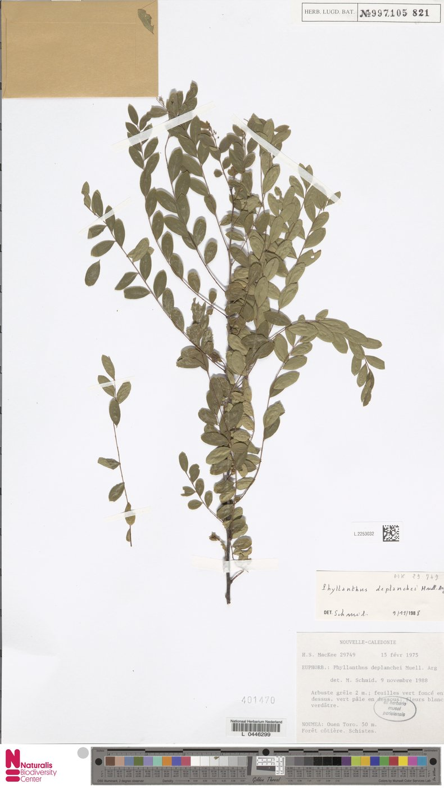
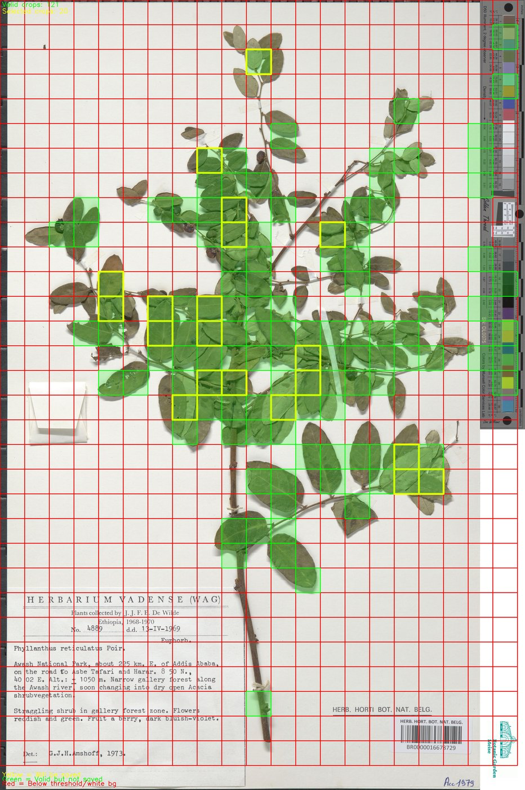
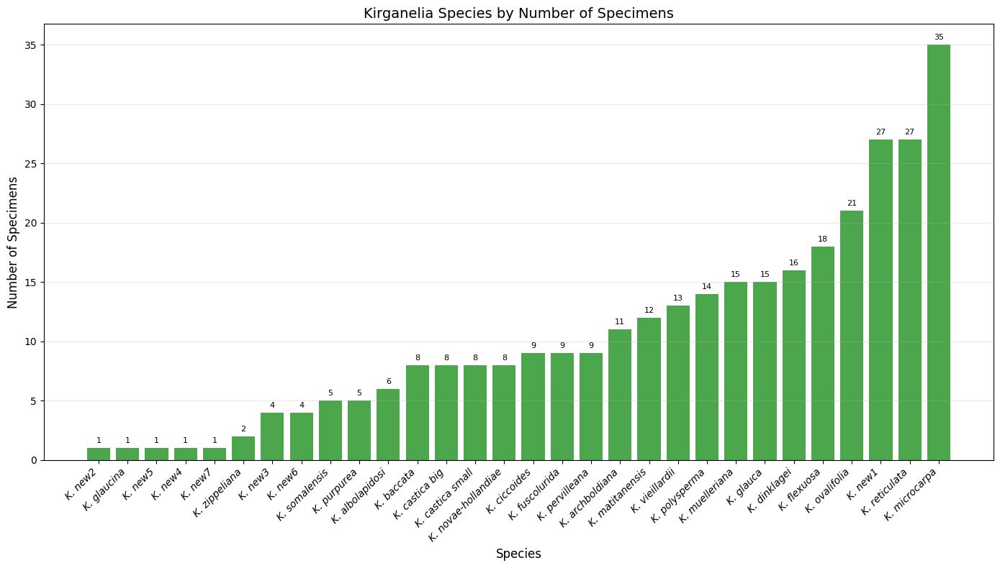
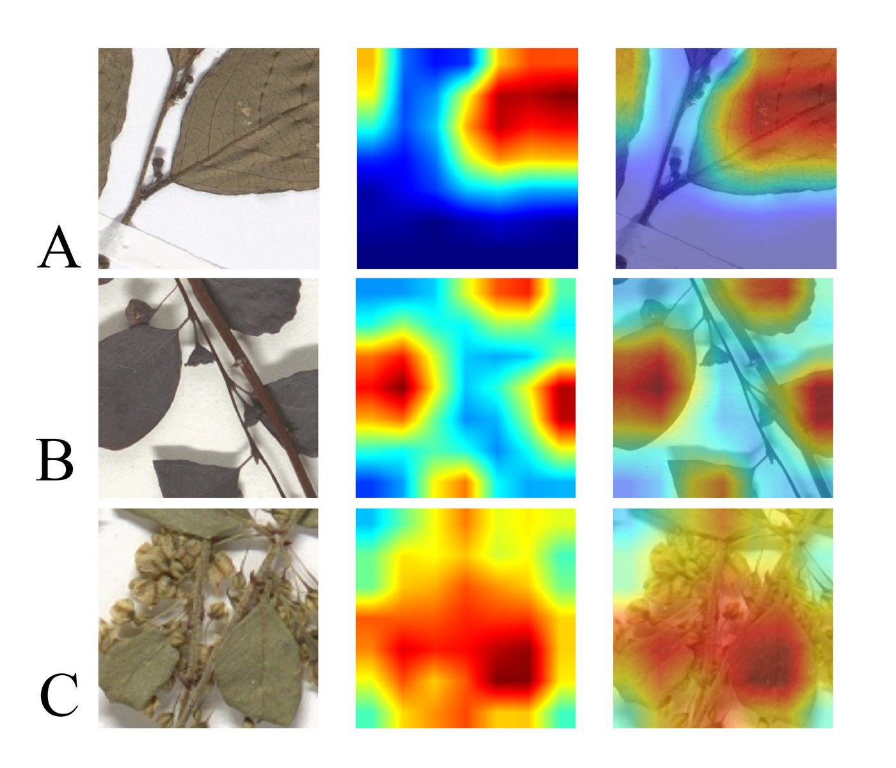

MSc Thesis · Data Science, Leiden University
Species Classification from Herbarium Images
This project was my Master's thesis in Computer Science at Leiden University, done in collaboration with Naturalis Biodiversity Center. I wanted to build a deep learning model that could tell Kirganelia species apart using leaf photos alone, without needing to dissect a single flower.
Background
Kirganelia is a small tropical plant genus in the Phyllanthaceae family. It sounds obscure but that is exactly why it makes a good case study. Different species in this genus look almost the same from the outside. The traits that actually separate them are tiny reproductive parts, often smaller than one millimetre, hidden inside the flowers. To check those traits by hand, you usually have to rehydrate and dissect a dried herbarium specimen. That damages a sample that took decades to preserve. A recent phylogenomic study finally gave Kirganelia a reliable species classification, based on DNA evidence instead of just looking at the plant. That gave me a solid ground truth to test something less invasive: can a deep learning model recognise these species just by looking at photos of leaves?

How the project was structured
I split the work into three stages: preparing the data, training the models, and evaluating what came out the other end.
Data and preprocessing. The dataset came from 314 herbarium specimens across 30 Kirganelia species, mostly sourced through Naturalis Biodiversity Center's BioPortal. Each specimen was tied to a species label that had already been validated with DNA evidence, so the ground truth was trustworthy from the start. Raw herbarium sheets are messy though. One sheet can include leaves, flowers and tape all in the same photo, and scan resolution varies a lot too. I built a Python script that combines colour, edge and texture information to automatically detect and crop out just the leaf regions, using a sliding window of 224 by 224 pixels. Only windows with at least 60% leaf coverage were kept, and a manual pass afterwards filtered out any crops that still had things like tape or heavy shadows. That pipeline turned 314 full herbarium sheets into 12,946 clean leaf image crops across 30 species.

Model training. With clean leaf crops ready, I trained three convolutional neural networks: ResNet50, EfficientNetV2-Small and MobileNetV3-Large. All three started from ImageNet-pretrained weights, and I fine-tuned the entire network instead of freezing most of it. That tends to work well once you have a decent amount of data to adapt with. The dataset was heavily imbalanced. The rarest species had only 8 images to learn from, which is barely enough for a model to say hello, let alone learn what makes that species special. The most common species, on the other hand, had over 1,000. To correct for that, I tested three techniques: class-weighted loss, focal loss and balanced sampling. Each one was tried on its own and in combination with the others. Hyperparameters were tuned separately for each architecture using random search and five-fold cross-validation, with the test set kept completely separate until final evaluation.

Evaluation. Raw accuracy can look great while still failing rare species completely. To catch that, I also tracked balanced accuracy, macro F1 and a custom minority F1 score that focuses only on rarer species. On top of that, predictions were rolled up hierarchically. Individual leaf crops were aggregated into specimen-level predictions, and those were aggregated again into species-level recognition rates. That extra step matters biologically, since a single blurry crop being wrong should not sink an otherwise well-identified specimen.
Tools and frameworks
Python and OpenCV-style image processing handled the leaf cropping and preprocessing, with Adobe Photoshop used earlier on to standardise scan scale using a reference ruler. ResNet50, EfficientNetV2-Small and MobileNetV3-Large were all used through transfer learning with ImageNet-pretrained weights. Class-weighted loss, focal loss and balanced sampling handled the class imbalance side. Training and evaluation ran in Google Colab. Pandas, NumPy, scikit-learn and matplotlib handled the data analysis side. Grad-CAM was added later for the explainability part.
Why hierarchical evaluation mattered
A model can hit 97% accuracy overall and still be quietly useless for the species that matter most in taxonomy, the rare ones. That is the whole point of splitting evaluation into image, specimen and species levels instead of reporting one accuracy number and calling it done. In this project, nearly 80% of the sufficiently sampled species were reliably recognised at the specimen level, and none of them dropped into the poorly recognised category. Even five out of six species with just one or two specimens each were still identified correctly. There was one exception, a species labelled sp4, which the model kept confusing with a closely related species called K. albolapidosi. Interestingly, the correct species was almost always its second guess. That suggests the model was not lost. It was just genuinely unsure between two very similar-looking species.
What Grad-CAM showed
The journal version of this work added one extra piece: Grad-CAM, a technique that highlights which part of an image a CNN actually paid attention to when making a prediction. I ran it on close to 300 test images spread across all 30 species. The activation was consistently centred on the leaf tissue itself, even in crops that also included a bit of stem or flower. That is a good sign. It means the model was learning real leaf features instead of picking up shortcuts like mounting paper texture or lighting differences between scans. The one exception showed up again in sp4, where a few misclassified images had activation bleeding into the mounting tape holding the leaves down. That species only had one available specimen, and its leaves happened to be taped down quite heavily, so it is a fairly understandable edge case rather than a sign the whole approach was flawed.

The end product
Put together, the end result is a set of trained CNN models that can tell Kirganelia species apart using just a photo of a leaf. EfficientNetV2-S came out on top for raw accuracy and overall consistency, landing around 97.5%. MobileNetV3-Large trained with weighted loss was the best at not ignoring rare species, reaching a minority F1 score of 0.89 while still keeping strong overall numbers. Which model you would actually pick depends on what you care about more, maximum accuracy on common species or fair treatment of the rare ones.
What I learned
This project sat right at the intersection of biology and machine learning, which was new territory for me. I learned to be more careful about what a good accuracy number is actually hiding, especially in a dataset this imbalanced. A model that ignores the rare species can still look great on paper. The Grad-CAM results were probably my favourite part, since they gave me an actual answer to whether the model was cheating or genuinely looking at the plant. It was not perfect on every species, and it was never going to fully replace a taxonomist dissecting a flower under a microscope. But it showed that a non-destructive, image-based shortcut can get you most of the way there for a lot of species, which for a group as tricky as Kirganelia is a pretty solid result.
Tools and frameworks: Python, OpenCV-style preprocessing, Adobe Photoshop, ResNet50, EfficientNetV2-S, MobileNetV3-Large, Grad-CAM, Google Colab, pandas, NumPy, scikit-learn, matplotlib.